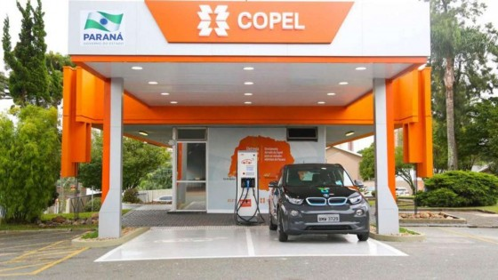

Primeira eletrovia do Brasil é inaugurada em Curitiba
Aconteceu nesta terça-feira (27) a inauguração da primeira eletrovia do Brasil na sede da distribuidora de energia paranaense Copel, em Curitiba.{kind=link}
Primeira eletrovia do Brasil é inaugurada em Curitiba
A partir de hoje, estão abertos dois postos: um em Curitiba, no Km 3, e outro em Paranaguá. Ao longo deste ano, as cidades de Irati, Guarapuava, Laranjeiras do Sul, Cascavel, Medianeira e Foz do Iguaçu também receberão os eletropostos, totalizando oito localidades e criando uma via que cruza o estado do leste ao oeste.

Eletroposto em Curitiba

Antonio Sérgio de Souza Guetter
As três tendências citadas por Guetter são:
- A grande velocidade de inovação tecnológica (veículos elétricos, baterias, autonomia) que pode transformar sensivelmente a sociedade e o setor elétrico;
- Mudança de comportamento do consumidor, cada vez mais com a intenção de dominar o seu consumo, saber quanto custa e fazer parte das decisões sem seguir regras de terceiros. "Aqui ele vai poder saber quanto ele gasta, vai poder gerar sua própria energia e, eventualmente, saber exatamente fazer a gestão de seus custos de energia", ressalta;
- O esforço internacional de redução de emissão de carbono, o que traz um papel fundamental para a eletricidade.

Eletroposto Copel

Monitor para o controle da recarga
Carbono 0
A troca de carros convencionais por carros elétricos é uma etapa que vai transformar o setor elétrico e, segundo Guetter, a Copel quer estar pronta para atender a esse novo cenário com soluções de mobilidade elétrica, redução de carbono e rede de energia capaz de absorver essa tendência.Mais de 95% da geração de energia da Copel é originada de fontes renováveis, fortalecendo a questão da sustentabilidade. Por isso, Guetter acredita que haverá uma redução significativa na emissão de carbono.
A Copel foi convidada pela TDA, organização em prol da redução das emissões de carbono, para ser a representante da América do Sul, ao lado de países como Holanda, França, Portugal e Canadá.
Ao todo, foram investidos R$ 5,5 milhões em pesquisa e desenvolvimento para a conclusão da primeira eletrovia do Brasil.
Fonte:
27/Mar/2018 21:13:25